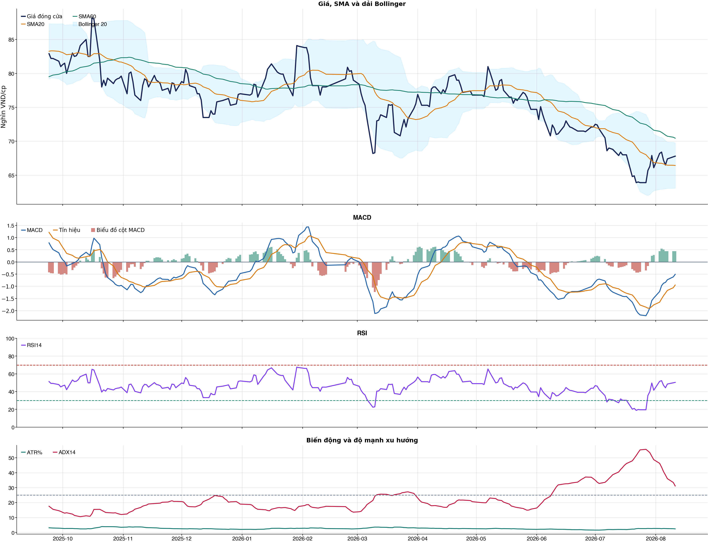
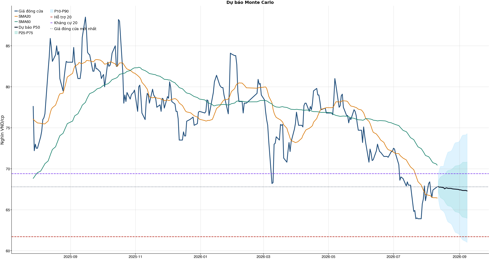
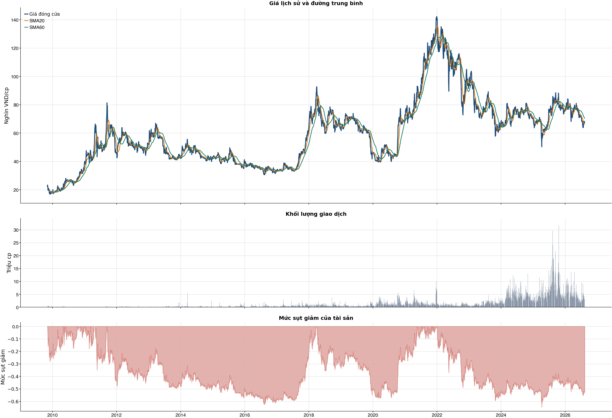

Kết quả chính
Tổng quan cơ bản
Biểu đồ kỹ thuật

Tín hiệu kỹ thuật
| Xu hướng | Cẩn thận | Giá nằm dưới SMA60. |
| MACD | Tích cực | MACD trên signal, histogram dương. |
| RSI14 | Trung tính | RSI 50.4. |
| Bollinger | Ổn định | Giá nằm trong dải Bollinger. |
| ADX | Xu hướng tăng | ADX 31.1, +DI vượt -DI. |
| Thanh khoản | Thấp | 0.31 lần trung bình. |
| Stochastic | Hồi phục | %K nằm trên %D. |
So sánh mô hình
| XGBoost | 0.498 | AUC 0.495 |
| Logistic | 0.499 | AUC 0.513 |
| Đa số | 0.500 | Mốc so sánh |
Kiểm thử chiến lược ngoài mẫu sau chi phí
| Lợi nhuận ròng | -15.4% | 652 quan sát ngoài mẫu |
| Sharpe | -1.32 | Sau chi phí |
| Mức sụt giảm tối đa | -18.3% | 17 vòng giao dịch |
| Chi phí giả định | 50.0 bps | Một vòng mua và bán |
Mức độ quan trọng của đặc trưng
| atr_pct_14 | 16.16 | Mức đóng góp |
| relative_strength_20d | 15.86 | Mức đóng góp |
| close_vs_sma20 | 15.80 | Mức đóng góp |
| return_kurtosis_20d | 13.42 | Mức đóng góp |
| volume_ratio_20 | 12.95 | Mức đóng góp |
| range_pct | 12.56 | Mức đóng góp |
| return_skew_20d | 11.59 | Mức đóng góp |
| volatility_20d | 11.08 | Mức đóng góp |
Điều kiện phát hành tín hiệu
| AUC của mô hình | KHÔNG ĐẠT | Điều kiện phát hành tín hiệu |
| Độ chính xác cân bằng của mô hình | KHÔNG ĐẠT | Điều kiện phát hành tín hiệu |
| XGBoost vượt mô hình Logistic đối chứng | KHÔNG ĐẠT | Điều kiện phát hành tín hiệu |
| Xác suất tăng đạt ngưỡng | KHÔNG ĐẠT | Điều kiện phát hành tín hiệu |
| Bối cảnh kỹ thuật đạt ngưỡng | ĐẠT | Điều kiện phát hành tín hiệu |
| Tỷ lệ lợi nhuận/rủi ro đạt ngưỡng | ĐẠT | Điều kiện phát hành tín hiệu |
| Dữ liệu còn mới | ĐẠT | Điều kiện phát hành tín hiệu |
| Có khối lượng vị thế hợp lệ | ĐẠT | Điều kiện phát hành tín hiệu |
| Có kết quả kiểm thử chiến lược ngoài mẫu | ĐẠT | Điều kiện phát hành tín hiệu |
| Mẫu kiểm thử chiến lược đủ lớn | ĐẠT | Điều kiện phát hành tín hiệu |
| Kiểm thử chiến lược có lợi thế ròng | KHÔNG ĐẠT | Điều kiện phát hành tín hiệu |
Quản trị rủi ro
| Rủi ro/lệnh | 1.0% | 1,000,000 VND |
| Mức dừng lỗ | 65.36 | Rủi ro mỗi cổ phiếu 2.77 |
| Mục tiêu 1 | 74.29 | Lợi nhuận/rủi ro 2.21 |
| Mục tiêu 2 | 74.29 | Dự báo/kháng cự |
Phân tích cơ bản
| P/E | 14.60 | 2026-Q2 |
| P/B | 2.46 | 2026-Q2 |
| P/S | 1.02 | 2026-Q2 |
| ROE | 19.4% | 2026-Q2 |
| ROA | 5.4% | 2026-Q2 |
| Gross margin | 31.6% | 2026-Q2 |
| Net margin | 10.3% | 2026-Q2 |
| Debt/Equity | 1.88 | 2026-Q2 |
| Current ratio | 0.87 | 2026-Q2 |
| NPL | 0.0% | 2026-Q2 |
| Dividend yield | 0.0% | 2026-Q2 |
| Market cap | 98,867.4 tỷ | 2026-Q2 |
| Revenue Growth | 53.5% | 2026-Q2 YoY |
| Profit Growth | 202.8% | 2026-Q2 YoY |
| Dòng tiền từ HĐKD | -289.0 tỷ | 2026-Q2 |
| CAPEX | -473.0 tỷ | 2026-Q2 |
| Lợi nhuận sau thuế | 3,799.9 tỷ | 2026-Q2 |
| Lợi nhuận hoạt động | 4,193.5 tỷ | 2026-Q2 |
| Chi phí lãi vay | -1,697.7 tỷ | 2026-Q2 |
| Tiền và tương đương tiền | 11,550.7 tỷ | 2026-Q2 |
| Vay ngắn hạn | 28,139.9 tỷ | 2026-Q2 |
| Vay dài hạn | 41,000.0 tỷ | 2026-Q2 |
| Tổng tài sản | 142,957.5 tỷ | 2026-Q2 |
| Tổng nợ phải trả | 93,390.4 tỷ | 2026-Q2 |
| Vốn chủ sở hữu | 49,567.0 tỷ | 2026-Q2 |
| Khoản phải thu | 5,001.3 tỷ | 2026-Q2 |
| Hàng tồn kho | 17,257.2 tỷ | 2026-Q2 |
| Dòng tiền tự do (CFO - CAPEX) | -762.0 tỷ | 2026-Q2 |
| CFO / Lợi nhuận sau thuế | -0.08 | 2026-Q2 |
| Nợ vay ròng | 57,589.3 tỷ | 2026-Q2 |
| Nợ vay / Vốn chủ sở hữu | 1.39 | 2026-Q2 |
| Phải thu / Tổng tài sản | 3.5% | 2026-Q2 |
| Khả năng trả lãi (EBIT / lãi vay) | 2.47 | 2026-Q2 |
Tin tức doanh nghiệp
| Trạng thái | Có dữ liệu | research_only |
| Nguồn / số bài | VCI | 50 |
| Bài đủ timestamp | 50 | Chỉ các bài này mới được phép dùng point-in-time |
| Sentiment 5 ngày | 1.00 | 1.0 bài trước cutoff |
| Phương pháp | keyword_heuristic_v1 | Research only; chưa dùng làm tín hiệu mua/bán |
Dự báo ngắn hạn
| 2026-08-12 | 67.82 | P10 66.46 / P90 69.29 |
| 2026-08-13 | 67.75 | P10 65.63 / P90 69.87 |
| 2026-08-14 | 67.76 | P10 65.09 / P90 70.29 |
| 2026-08-17 | 67.69 | P10 64.79 / P90 70.31 |
| 2026-08-18 | 67.55 | P10 64.60 / P90 70.90 |
| 2026-08-19 | 67.64 | P10 64.22 / P90 71.30 |
| 2026-08-20 | 67.67 | P10 63.82 / P90 71.68 |
| 2026-08-21 | 67.61 | P10 63.54 / P90 72.02 |
Biểu đồ dự báo

Lịch sử giá và mức sụt giảm

Báo cáo dùng để học tập và lập kịch bản, không phải khuyến nghị mua/bán.
Phân tích AI có kiểm chứng
Trạng thái quyết định: NO_EDGE
Tóm tắt: ML decision hiện giữ nguyên NO_EDGE. News Reader đã trích đoạn có nguồn của 4 bài để phân loại chủ đề (ket_qua_kinh_doanh: 1, vi_mo: 1, nganh: 1), nhưng các trích đoạn này không tạo bằng chứng mới cho quyết định đầu tư.
Kỹ thuật: Artifact kỹ thuật: bias Hồi phục / nghiêng tăng; điểm 3. Chi tiết artifact: Xu hướng: Cẩn thận (Giá nằm dưới SMA60.); MACD: Tích cực (MACD trên signal, histogram dương.); RSI14: Trung tính (RSI 50.4.); Bollinger: Ổn định (Giá nằm trong dải Bollinger.); ADX: Xu hướng tăng (ADX 31.1, +DI vượt -DI.); Thanh khoản: Thấp (0.31 lần trung bình.); Stochastic: Hồi phục (%K nằm trên %D.)
Cơ bản: Artifact cơ bản: Tập đoàn Masan; kỳ 2026-Q2; P/E 14.60; P/B 2.46; ROE 19.4%; ROA 5.4%; Debt/Equity 1.88; Revenue Growth 53.5%; Profit Growth 202.8%.
Tin tức: Đã đọc trích đoạn giới hạn của 4 bài; phân nhóm rule-based: ket_qua_kinh_doanh: 1, vi_mo: 1, nganh: 1. Tác động cần kiểm chứng: Đối chiếu doanh thu/lợi nhuận trong bài với BCTC và kỳ vọng thị trường. Đối chiếu thời điểm công bố và kênh tác động lãi suất/tỷ giá với mô hình kinh doanh. So sánh tín hiệu ngành với thị phần, nhu cầu và đối thủ trước khi suy luận cho riêng doanh nghiệp. Đây không phải sentiment hay dự báo tác động giá.
Live research: Live snapshot lấy lúc 2026-08-11T05:04:41.896407+00:00; News Reader đọc được 4 bài. ML có 5 lý do guard và vẫn là NO_EDGE. Không dùng tin live để train/backtest.
Rủi ro cần kiểm chứng
- ML guard: AUC 0.495 < 0.540
- ML guard: Balanced accuracy 0.498 < 0.520
- ML guard: XGBoost chưa vượt logistic baseline: AUC XGBoost=0.4945523495141816, AUC logistic=0.5125998408441157
- ML guard: Probability 49.9% < 55.0%
- ML guard: Lợi thế OOS ròng không đạt: return=-0.15437910000000032, Sharpe=-1.3238452789079527
- News Reader: Đối chiếu doanh thu/lợi nhuận trong bài với BCTC và kỳ vọng thị trường.
- News Reader: Đối chiếu thời điểm công bố và kênh tác động lãi suất/tỷ giá với mô hình kinh doanh.
- News Reader: So sánh tín hiệu ngành với thị phần, nhu cầu và đối thủ trước khi suy luận cho riêng doanh nghiệp.
- Chỉ lưu trích đoạn giới hạn để kiểm chứng nguồn; không lưu hay hiển thị toàn văn bài báo.
- Phân nhóm là keyword rule-based để định tuyến research, không phải sentiment hay dự báo tác động giá.
- Dữ liệu News Reader chỉ phục vụ research/report; không dùng làm feature train/backtest khi chưa có lịch sử available_at point-in-time.
- Tin live/trích đoạn cần mở URL gốc để kiểm chứng bối cảnh, số liệu và thời điểm trước khi sử dụng.
Bằng chứng
- ML decision artifact: NO_EDGE. AUC 0.495 < 0.540
- ML decision artifact: NO_EDGE. Balanced accuracy 0.498 < 0.520
- ML decision artifact: NO_EDGE. XGBoost chưa vượt logistic baseline: AUC XGBoost=0.4945523495141816, AUC logistic=0.5125998408441157
- ML decision artifact: NO_EDGE. Probability 49.9% < 55.0%
- ML decision artifact: NO_EDGE. Lợi thế OOS ròng không đạt: return=-0.15437910000000032, Sharpe=-1.3238452789079527
- News Reader [Fili.vn]: Ngày 11/08/2026: 10 cổ phiếu nóng dưới góc nhìn PTKT của Vietstock - Fili.vn | nhóm: khác (2026-08-11T01:58:00+00:00)
- News Reader [nguoiquansat.vn]: Cổ phiếu đáng chú ý ngày 10/8: MSN, MWG, FPT - nguoiquansat.vn | nhóm: ket_qua_kinh_doanh, vi_mo, nganh (2026-08-09T14:51:01+00:00)
- News Reader [Fili.vn]: Tuần 10-14/08/2026: 10 cổ phiếu nóng dưới góc nhìn PTKT của Vietstock - Fili.vn | nhóm: khác (2026-08-10T01:57:45+00:00)
- News Reader [Fili.vn]: Ngày 06/08/2026: 10 cổ phiếu nóng dưới góc nhìn PTKT của Vietstock - Fili.vn | nhóm: khác (2026-08-06T02:00:48+00:00)
Báo cáo chỉ tổng hợp artifact đã lưu để nghiên cứu; không phải khuyến nghị mua/bán. Quyết định và vị thế vẫn bị khóa theo signal_decision.json.
Tin web đã lấy
| Nguồn | Tiêu đề | Thời điểm | Link |
|---|---|---|---|
| Fili.vn | Ngày 11/08/2026: 10 cổ phiếu nóng dưới góc nhìn PTKT của Vietstock - Fili.vn | 2026-08-11T01:58:00+00:00 | Mở nguồn |
| nguoiquansat.vn | Cổ phiếu đáng chú ý ngày 10/8: MSN, MWG, FPT - nguoiquansat.vn | 2026-08-09T14:51:01+00:00 | Mở nguồn |
| Fili.vn | Tuần 10-14/08/2026: 10 cổ phiếu nóng dưới góc nhìn PTKT của Vietstock - Fili.vn | 2026-08-10T01:57:45+00:00 | Mở nguồn |
| Fili.vn | Ngày 06/08/2026: 10 cổ phiếu nóng dưới góc nhìn PTKT của Vietstock - Fili.vn | 2026-08-06T02:00:48+00:00 | Mở nguồn |
News Reader: bài đã đọc và trích đoạn
| Nguồn | Tiêu đề | Nhóm | Thời điểm | Trích đoạn đã đọc | Link |
|---|---|---|---|---|---|
| Fili.vn | Ngày 11/08/2026: 10 cổ phiếu nóng dưới góc nhìn PTKT của Vietstock - Fili.vn | khác | 2026-08-11T01:58:00+00:00 | Xem trích đoạnNgày 11/08/2026: 10 cổ phiếu nóng dưới góc nhìn PTKT của Vietstock Các cổ phiếu nóng được phân tích trong báo cáo của Phòng Tư vấn Vietstock gồm: BSR , BVH , CTG , MSN , PAN , SSB , TPB , VPB , VCB , VNM. Các cổ phiếu này được chọn lọc theo vốn hóa thị trường, thanh khoản, mức độ quan tâm của nhà đầu tư... Các phân tích dưới đây có thể phục vụ cho mục đích tham khảo trong ngắn hạn cũng như dài hạn. BSR - CTCP - Tổng Công ty Lọc hóa dầu Việt Nam Giá cổ phiếu BSR tiếp tục tăng mạnh trong phiên giao dịch ngày 10/08/2026 với sự xuất hiện của mẫu hình Spinning Top. Khối lượng giao dịch vượt xa mức trung bình 20 ngày cho thấy nhà đầu tư đã bớt thận trọng. Chỉ báo Stochastic Oscillator đảo chiều và cắt lên trên đường signal nên triển vọng ngắn hạn được cải thiện. Giá cổ phiếu BVH giằng co trong phiên giao dịch ngày 10/08/2026 với sự xuất hiện của mẫu hình Long Lower Shadow. Giá đang bám vào Upper Band của Bollinger Bands và đi lên trong thời gian qua. Chỉ báo MACD đã cắt lên đường signal và vượt ngưỡng 0 nên triển vọng ngắn hạn sẽ càng lạc quan. Giá cổ phiếu CTG tiếp tục đi lên trong phiên giao dịch ngày 10/08/2026 với sự xuất hiện của mẫu hình nến Doji. Giá đã lần lượt vượt qua đường Middle của Bollinger Bands và SMA 50 ngày. Nếu đường SMA 100 ngày cũng bị phá vỡ trong các phiên tới thì đà tăng sẽ càng được củng cố. Trong phiên giao dịch ngày 10/08/2026, giá cổ phiếu MSN giằng co với sự xuất hiện của mẫu hình Spinning Top. Giá liên tục nhận được sự hỗ trợ từ đường Middle của Bollinger Bands. Mặt khác, chỉ báo MACD đã cắt lên trên đường signal nên triển vọng ngắn hạn khá tích cực. Khối lượng giao dịch cần vượt mức trung bình 20 ngày trong các phiên tới để xác nhận đà tăng trưởng. Giá cổ phiếu PAN giằng co trong phiên giao dịch ngày 10/08/2026 với sự xuất hiện của mẫu hình Doji. Khối lượng giao dịch tăng mạnh trở lại và vượt mức trung bình 20 ngày cho thấy nhà đầu tư không quá thận trọng. Đáy cũ tháng 11/2025 (tương đương vùng 19,500-21,000) sẽ tiếp tục đóng vai trò hỗ trợ quan trọng trong thời gian tới. Giá cổ phiếu SSB quay lại đà tăng trong phiên giao dịch ngày 10/08/2026 sau chuỗi giảm liên tiếp. Khối lượng giao dịch tăng và vượt mức trung bình 20 ngày cho thấy nhà đầu tư đã bớt thận trọng. Vùng 14,500-15,000 (tương đương đỉnh cũ đã bị vượt qua của tháng 01/2026 và tháng 05/2026) sẽ đóng vai trò hỗ trợ mạnh trong thời gian tới. Giá cổ phiếu TPB tiếp tục tăng | Mở nguồn |
| nguoiquansat.vn | Cổ phiếu đáng chú ý ngày 10/8: MSN, MWG, FPT - nguoiquansat.vn | ket_qua_kinh_doanh, vi_mo, nganh | 2026-08-09T14:51:01+00:00 | Xem trích đoạnCông ty chứng khoán phân tích và đưa ra nhận định mua, bán đối với các cổ phiếu MSN, MWG, FPT. Masan (MSN): Khuyến nghị tăng tỷ trọng, giá mục tiêu 75.000 đồng/cp Kết phiên 7/8, cổ phiếu MSN tăng 1,4% lên 67.400 đồng/cp. Thanh khoản đạt 3,2 triệu đơn vị, tương ứng giá trị giao dịch 213 tỷ đồng. Theo Chứng khoán Agribank (Agriseco), cổ phiếu MSN đang ghi nhận nhịp hồi phục kỹ thuật sau khi đánh mất vùng hỗ trợ 66.000 đồng/cp và lùi về dải dưới Bollinger quanh 62.000 - 63.000 đồng/cp. Giá cổ phiếu hiện đã quay trở lại vùng đáy của nền tích lũy trung hạn 66.000 - 68.000 đồng/cp, đồng thời lấy lại MA20 ngày, cho thấy xu hướng ngắn hạn đang cải thiện và mở ra cơ hội tích lũy cho nhà đầu tư trung hạn khi định giá đã lùi về vùng hỗ trợ. Trong ngắn hạn, vùng MA50 quanh 69.500 - 70.000 đồng/cp đang đóng vai trò kháng cự đáng chú ý. Nhà đầu tư có thể mở vị thế mua ngắn hạn quanh vùng giá hiện tại và gia tăng tỷ trọng nếu MSN vượt vùng kháng cự này với thanh khoản cải thiện, qua đó xác nhận khả năng mở rộng nhịp hồi phục. Giá mục tiêu cho các vị thế ngắn hạn là 75.000 đồng/cp; cân nhắc cắt lỗ nếu cổ phiếu không giữ được vùng hỗ trợ và xuyên thủng ngưỡng 63.000 đồng/cp. Về triển vọng kinh doanh, Agriseco kỳ vọng mảng hàng tiêu dùng - bán lẻ của MSN tiếp tục duy trì tăng trưởng hai chữ số trong nửa cuối năm 2026, được hỗ trợ bởi tổng mức bán lẻ hàng hóa cả nước 7 tháng đầu năm tăng 13,1% so với cùng kỳ. WCM cũng đang bám sát kế hoạch mở mới trong năm 2026, với hơn 90% cửa hàng mở mới có EBITDA dương. Bên cạnh đó, MSR được kỳ vọng tiếp tục đóng góp tích cực khi giá APT vonfram quốc tế dù giảm hơn 30% từ đầu năm vẫn cao hơn 40 - 70% so với cùng kỳ, trong khi giá đồng duy trì ở vùng cao nhiều năm. Agriseco kỳ vọng lợi nhuận sau thuế của MSN có thể duy trì tăng trưởng 25 - 40% trong nửa cuối năm 2026. Bên cạnh đó, MSN đang có nghĩa vụ quyền chọn bán tại The CrownX trị giá khoảng 750 triệu USD, đáo hạn vào quý III/2027. Ngoài ra, ban lãnh đạo dự kiến thu xếp nguồn vốn từ dòng tiền tự do của MSN và thu hút đối tác chiến lược vào MSR sau khi doanh nghiệp chuyển sàn. Tuy nhiên, Agriseco lưu ý rủi ro phụ thuộc vào nguồn nguyên liệu nhập khẩu tại MSR. Hiện khoảng 30% nguyên liệu đầu vào của MSR đến từ nguồn nội bộ và 70% từ nhập khẩu. Chênh lệch biên lợi nhuận gộp giữa hai nguồn lên tới 3 - 4 lần có thể trở thành yếu tố ảnh hưởng đến lợi nhuận trong tương lai. Trong ngắn hạn, rủi | Mở nguồn |
| Fili.vn | Tuần 10-14/08/2026: 10 cổ phiếu nóng dưới góc nhìn PTKT của Vietstock - Fili.vn | khác | 2026-08-10T01:57:45+00:00 | Xem trích đoạnTuần 10-14/08/2026: 10 cổ phiếu nóng dưới góc nhìn PTKT của Vietstock Các cổ phiếu nóng được phân tích trong báo cáo của Phòng Tư vấn Vietstock gồm: BSR , BVH , EIB , MSN , PAN , OCB , TPB , VPB , VCB , VNM . Các cổ phiếu này được chọn lọc theo vốn hóa thị trường, thanh khoản, mức độ quan tâm của nhà đầu tư... Các phân tích dưới đây có thể phục vụ cho mục đích tham khảo trong ngắn hạn cũng như dài hạn. BSR - CTCP - Tổng Công ty Lọc hóa dầu Việt Nam Giá cổ phiếu BSR bất ngờ tăng mạnh trong phiên giao dịch ngày 07/08/2026 với sự xuất hiện của cây nến xanh dài. Khối lượng giao dịch vượt xa mức trung bình 20 ngày cho thấy nhà đầu tư đã bớt thận trọng. Chỉ báo Stochastic Oscillator đảo chiều và cắt lên trên đường signal nên triển vọng ngắn hạn được cải thiện. Giá cổ phiếu BVH quay lại đà tăng trong phiên giao dịch ngày 07/08/2026 với sự xuất hiện của mẫu hình Big White Candle. Giá đang bám vào Upper Band của Bollinger Bands và đi lên trong thời gian qua. Chỉ báo MACD đã cắt lên đường signal và vượt ngưỡng 0 nên triển vọng ngắn hạn sẽ càng lạc quan. Giá cổ phiếu EIB giằng co trong phiên giao dịch ngày 07/08/2026 và tiếp tục test Middle của Bollinger Bands. Chỉ báo Stochastic Oscillator và MACD đều đi lên sau khi cắt lên trên đường signal nên triển vọng ngắn hạn chuyển biến tích cực. Giá test lại đáy cũ tháng 04/2025 (tương đương vùng 15,500-17,500) và đã nhận được sự hỗ trợ mạnh. Trong phiên giao dịch ngày 07/08/2026, giá cổ phiếu MSN tăng trở lại sau khi nhận được sự hỗ trợ từ đường Middle của Bollinger Bands. Chỉ báo MACD đã cắt lên trên đường signal nên triển vọng ngắn hạn khá tích cực. Khối lượng giao dịch cần vượt mức trung bình 20 ngày trong tuần tới để xác nhận đà tăng trưởng. Giá cổ phiếu PAN giảm nhẹ trong phiên giao dịch ngày 07/08/2026 và khối lượng giao dịch rơi xuống dưới mức trung bình 20 ngày. Đáy cũ tháng 11/2025 (tương đương vùng 19,500-21,000) sẽ tiếp tục đóng vai trò hỗ trợ quan trọng trong thời gian tới. Giá cổ phiếu OCB quay lại đà tăng trong phiên giao dịch ngày 07/08/2026 và đã vượt đường SMA 100 ngày. Khối lượng giao dịch đang nằm dưới mức trung bình 20 ngày cho thấy nhà đầu tư khá thận trọng. Chỉ báo Stochastic Oscillator và MACD đều đã cắt lên đường signal nên rủi ro ngắn hạn được hạn chế. Giá cổ phiếu TPB tăng trong phiên giao dịch ngày 07/08/2026 và test lại Middle của Bollinger Bands. Đáy cũ tháng 07/2026 (tương đương vùng | Mở nguồn |
| Fili.vn | Ngày 06/08/2026: 10 cổ phiếu nóng dưới góc nhìn PTKT của Vietstock - Fili.vn | khác | 2026-08-06T02:00:48+00:00 | Xem trích đoạnNgày 06/08/2026: 10 cổ phiếu nóng dưới góc nhìn PTKT của Vietstock Các cổ phiếu nóng được phân tích trong báo cáo của Phòng Tư vấn Vietstock gồm: ACB , BVH , EIB , MSN , PAN , OCB , TPB , VPB , VIC , VNM. Các cổ phiếu này được chọn lọc theo vốn hóa thị trường, thanh khoản, mức độ quan tâm của nhà đầu tư... Các phân tích dưới đây có thể phục vụ cho mục đích tham khảo trong ngắn hạn cũng như dài hạn. Giá cổ phiếu ACB giằng co mạnh trong phiên giao dịch ngày 05/08/2026 với sự xuất hiện của mẫu hình nến Doji. Khối lượng giao dịch đang nằm dưới mức trung bình 20 ngày cho thấy nhà đầu tư khá thận trọng. Chỉ báo Stochastic Oscillator đảo chiều và cắt lên trên đường signal nên triển vọng ngắn hạn được cải thiện. Giá cổ phiếu BVH quay lại đà tăng trong phiên giao dịch ngày 05/08/2026 và bám vào Upper Band của Bollinger Bands. Chỉ báo MACD đã cắt lên đường signal. Nếu trong các phiên tới chỉ báo này vượt ngưỡng 0 thì triển vọng ngắn hạn sẽ càng lạc quan. Giá cổ phiếu EIB giằng co trong phiên giao dịch ngày 05/08/2026 với sự xuất hiện của mẫu hình Inverted Hammer. Giá tăng 5 trong 7 phiên giao dịch gần nhất cho thấy sự lạc quan đang quay trở lại. Mặt khác, chỉ báo Stochastic Oscillator và MACD đều đi lên sau khi cắt lên trên đường signal nên triển vọng ngắn hạn chuyển biến tích cực. Giá test lại đáy cũ tháng 04/2025 (tương đương vùng 15,500-17,500) và đã nhận được sự hỗ trợ mạnh. Trong phiên giao dịch ngày 05/08/2026, giá cổ phiếu MSN giảm trở lại và xuất hiện mẫu hình nến Bearish Engulfing. Giá đang nằm trên đường Middle của Bollinger Bands nên sẽ nhận được sự hỗ trợ từ ngưỡng này trong thời gian tới. Chỉ báo Stochastic Oscillator và MACD đều đã cắt lên trên đường signal nên triển vọng ngắn hạn được cải thiện. Giá cổ phiếu PAN giảm nhẹ trong phiên giao dịch ngày 05/08/2026 nhưng khối lượng giao dịch đang nằm trên mức trung bình 20 ngày. Đáy cũ tháng 11/2025 (tương đương vùng 19,500-21,000) sẽ tiếp tục đóng vai trò hỗ trợ quan trọng trong thời gian tới. Chỉ báo MACD đảo chiều và cắt lên trên đường signal nên triển vọng ngắn hạn được cải thiện. Giá cổ phiếu OCB quay lại đà tăng trong phiên giao dịch ngày 05/08/2026 và vượt đường SMA 100 ngày. Khối lượng giao dịch đang tiến sát mức trung bình 20 ngày cho thấy nhà đầu tư đã bớt thận trọng. Chỉ báo Stochastic Oscillator tăng và cắt lên đường signal nên rủi ro ngắn hạn được hạn chế. Giá cổ phiếu TPB tăng trong phiên giao | Mở nguồn |
Chi tiết báo cáo tài chính
Kết quả kinh doanh — 4 kỳ gần nhất
Hiển thị 35 dòng đầu; mở CSV đầy đủ.
| Khoản mục | 2026-Q2 | 2026-Q1 | 2025-Q4 | 2025-Q3 |
|---|---|---|---|---|
| Doanh thu bán hàng và cung cấp dịch vụ | 28,196.2 tỷ | 24,075.2 tỷ | 23,300.6 tỷ | 21,255.7 tỷ |
| Các khoản giảm trừ doanh thu | -78.5 tỷ | -55.5 tỷ | -54.7 tỷ | -91.8 tỷ |
| Doanh thu thuần | 28,117.7 tỷ | 24,019.8 tỷ | 23,245.8 tỷ | 21,163.8 tỷ |
| Giá vốn hàng bán | -19,206.8 tỷ | -16,113.7 tỷ | -15,990.4 tỷ | -14,722.3 tỷ |
| Lợi nhuận gộp | 8,910.9 tỷ | 7,906.0 tỷ | 7,255.4 tỷ | 6,441.5 tỷ |
| Doanh thu hoạt động tài chính | 497.4 tỷ | 425.1 tỷ | 320.9 tỷ | 829.1 tỷ |
| Chi phí tài chính | -1,823.2 tỷ | -1,894.8 tỷ | -1,604.4 tỷ | -2,041.6 tỷ |
| Chi phí lãi vay | -1,697.7 tỷ | -1,214.6 tỷ | -1,231.5 tỷ | -1,682.3 tỷ |
| Chi phí bán hàng | -4,302.9 tỷ | -4,089.7 tỷ | -3,807.5 tỷ | -3,356.4 tỷ |
| Chi phí quản lý doanh nghiệp | -564.1 tỷ | -1,369.1 tỷ | -906.1 tỷ | -1,001.7 tỷ |
| Lãi/(lỗ) từ hoạt động kinh doanh | 4,193.5 tỷ | 2,318.7 tỷ | 2,642.7 tỷ | 2,135.5 tỷ |
| Thu nhập khác | 23.4 tỷ | 24.6 tỷ | 123.9 tỷ | 73.0 tỷ |
| Chi phí khác | -54.2 tỷ | -23.2 tỷ | -99.2 tỷ | -56.4 tỷ |
| Thu nhập khác, ròng | -30.8 tỷ | 1.4 tỷ | 24.7 tỷ | 16.6 tỷ |
| Lãi/(lỗ) từ công ty liên doanh | 0.0 tỷ | 0.0 tỷ | 0.0 tỷ | 0.0 tỷ |
| Lãi/(lỗ) trước thuế | 4,162.8 tỷ | 2,320.2 tỷ | 2,667.4 tỷ | 2,152.1 tỷ |
| Thuế thu nhập doanh nghiệp - hiện thời | -365.7 tỷ | -398.8 tỷ | -324.8 tỷ | -310.8 tỷ |
| Thuế thu nhập doanh nghiệp - hoãn lại | 2.8 tỷ | 52.2 tỷ | -47.2 tỷ | 24.5 tỷ |
| Chi phí thuế thu nhập doanh nghiệp | -362.9 tỷ | -346.6 tỷ | -372.0 tỷ | -286.3 tỷ |
| Lãi/(lỗ) thuần sau thuế | 3,799.9 tỷ | 1,973.6 tỷ | 2,295.3 tỷ | 1,865.8 tỷ |
| Lợi ích của cổ đông thiểu số | 674.7 tỷ | 727.8 tỷ | 821.4 tỷ | 657.1 tỷ |
| Lợi nhuận của Cổ đông của Công ty mẹ | 3,125.2 tỷ | 1,245.8 tỷ | 1,474.0 tỷ | 1,208.7 tỷ |
| Lãi cơ bản trên cổ phiếu (VND) | 0.0 tỷ | 0.0 tỷ | 0.0 tỷ | 0.0 tỷ |
| Lãi trên cổ phiếu pha loãng (VND) | 0.0 tỷ | 0.0 tỷ | 0.0 tỷ | 0.0 tỷ |
| Lãi/(lỗ) từ công ty liên doanh (từ năm 2015) | 1,475.4 tỷ | 1,341.2 tỷ | 1,384.3 tỷ | 1,264.6 tỷ |
Bảng cân đối kế toán — 4 kỳ gần nhất
Hiển thị 35 dòng đầu; mở CSV đầy đủ.
| Khoản mục | 2026-Q2 | 2026-Q1 | 2025-Q4 | 2025-Q3 |
|---|---|---|---|---|
| TÀI SẢN NGẮN HẠN | 42,812.0 tỷ | 31,419.3 tỷ | 36,234.5 tỷ | 32,214.1 tỷ |
| Tiền và tương đương tiền | 11,550.7 tỷ | 7,081.1 tỷ | 12,101.9 tỷ | 13,266.3 tỷ |
| Tiền | 1,831.9 tỷ | 1,634.8 tỷ | 1,013.9 tỷ | 1,606.8 tỷ |
| Các khoản tương đương tiền | 9,718.7 tỷ | 5,446.3 tỷ | 11,088.0 tỷ | 11,659.5 tỷ |
| Đầu tư ngắn hạn | 6,076.9 tỷ | 6,924.1 tỷ | 5,379.8 tỷ | 1,463.3 tỷ |
| Đầu tư ngắn hạn | 1,983.0 tỷ | 2,203.0 tỷ | 3,824.1 tỷ | 446.7 tỷ |
| Dự phòng giảm giá | 0.0 tỷ | 0.0 tỷ | 0.0 tỷ | 0.0 tỷ |
| Các khoản phải thu | 5,001.3 tỷ | 3,603.2 tỷ | 5,639.3 tỷ | 5,282.6 tỷ |
| Phải thu khách hàng | 3,181.5 tỷ | 1,543.9 tỷ | 1,274.3 tỷ | 1,457.1 tỷ |
| Trả trước người bán | 617.5 tỷ | 624.1 tỷ | 542.9 tỷ | 583.0 tỷ |
| Phải thu nội bộ | 0.0 tỷ | 0.0 tỷ | 0.0 tỷ | 0.0 tỷ |
| Phải thu hợp đồng xây dựng đang thực hiện | 0.0 tỷ | 0.0 tỷ | 0.0 tỷ | 0.0 tỷ |
| Phải thu khác | 1,175.3 tỷ | 1,410.3 tỷ | 3,771.6 tỷ | 3,218.6 tỷ |
| Dự phòng nợ khó đòi | -30.5 tỷ | -30.5 tỷ | -85.5 tỷ | -84.3 tỷ |
| Hàng tồn kho, ròng | 17,257.2 tỷ | 11,329.9 tỷ | 11,262.2 tỷ | 10,307.8 tỷ |
| Hàng tồn kho | 17,396.4 tỷ | 11,544.2 tỷ | 11,415.7 tỷ | 10,460.3 tỷ |
| Dự phòng giảm giá hàng tồn kho | -139.2 tỷ | -214.3 tỷ | -153.5 tỷ | -152.5 tỷ |
| Tài sản lưu động khác | 2,346.0 tỷ | 1,896.4 tỷ | 1,851.4 tỷ | 1,894.0 tỷ |
| Chi phí trả trước ngắn hạn | 290.1 tỷ | 354.8 tỷ | 378.6 tỷ | 420.1 tỷ |
| Thuế GTGT được khấu trừ | 1,809.0 tỷ | 1,431.1 tỷ | 1,363.3 tỷ | 1,360.6 tỷ |
| Phải thu thuế khác | 117.5 tỷ | 110.6 tỷ | 109.5 tỷ | 113.3 tỷ |
| Tài sản lưu động khác | 129.4 tỷ | 0.0 tỷ | 0.0 tỷ | 0.0 tỷ |
| TÀI SẢN DÀI HẠN | 100,145.4 tỷ | 99,298.6 tỷ | 92,728.7 tỷ | 89,137.1 tỷ |
| Phải thu dài hạn | 1,811.5 tỷ | 1,725.2 tỷ | 4,949.6 tỷ | 2,337.4 tỷ |
| Phải thu khách hàng dài hạn | 0.0 tỷ | 0.0 tỷ | 0.0 tỷ | 0.0 tỷ |
| Phải thu nội bộ dài hạn | 0.0 tỷ | 0.0 tỷ | 0.0 tỷ | 0.0 tỷ |
| Phải thu dài hạn khác | 1,811.5 tỷ | 1,725.2 tỷ | 4,949.6 tỷ | 2,337.4 tỷ |
| Dự phòng phải thu dài hạn | 0.0 tỷ | 0.0 tỷ | 0.0 tỷ | 0.0 tỷ |
| Tài sản cố định | 35,009.4 tỷ | 35,310.9 tỷ | 35,484.2 tỷ | 35,518.1 tỷ |
| GTCL TSCĐ hữu hình | 26,083.5 tỷ | 26,322.2 tỷ | 26,392.7 tỷ | 26,305.2 tỷ |
| Nguyên giá TSCĐ hữu hình | 49,674.7 tỷ | 49,295.7 tỷ | 48,856.5 tỷ | 48,328.1 tỷ |
| Khấu hao lũy kế TSCĐ hữu hình | -23,591.1 tỷ | -22,973.5 tỷ | -22,463.8 tỷ | -22,022.9 tỷ |
| GTCL tài sản thuê tài chính | 194.8 tỷ | 199.5 tỷ | 204.1 tỷ | 208.8 tỷ |
| Nguyên giá tài sản thuê tài chính | 345.2 tỷ | 345.2 tỷ | 345.2 tỷ | 345.2 tỷ |
| Khấu hao lũy kế tài sản thuê tài chính | -150.4 tỷ | -145.7 tỷ | -141.1 tỷ | -136.4 tỷ |
Lưu chuyển tiền tệ — 4 kỳ gần nhất
Hiển thị 35 dòng đầu; mở CSV đầy đủ.
| Khoản mục | 2026-Q2 | 2026-Q1 | 2025-Q4 | 2025-Q3 |
|---|---|---|---|---|
| Lợi nhuận/(lỗ) trước thuế | 4,162.8 tỷ | 2,320.2 tỷ | 2,667.4 tỷ | 2,152.1 tỷ |
| Khấu hao TSCĐ và BĐSĐT | 1,006.4 tỷ | 929.3 tỷ | 859.7 tỷ | 841.0 tỷ |
| Chi phí dự phòng | 281.5 tỷ | 538.3 tỷ | 293.0 tỷ | 88.9 tỷ |
| Lãi/lỗ chênh lệch tỷ giá hối đoái do đánh giá lại các khoản mục tiền tệ có gốc ngoại tệ | 4.1 tỷ | -14.9 tỷ | -29.3 tỷ | -20.0 tỷ |
| Lãi/(lỗ) từ thanh lý tài sản cố định | 0.0 tỷ | 0.0 tỷ | 0.0 tỷ | 0.0 tỷ |
| (Lãi)/lỗ từ hoạt động đầu tư | -1,904.7 tỷ | -1,747.6 tỷ | -1,647.9 tỷ | -2,060.1 tỷ |
| Chi phí lãi vay | 1,527.7 tỷ | 1,384.5 tỷ | 1,354.5 tỷ | 1,817.7 tỷ |
| Thu lãi và cổ tức | 0.0 tỷ | 0.0 tỷ | 0.0 tỷ | 0.0 tỷ |
| Lợi nhuận/(lỗ) từ hoạt động kinh doanh trước những thay đổi vốn lưu động | 5,077.8 tỷ | 3,409.7 tỷ | 3,497.4 tỷ | 2,819.6 tỷ |
| (Tăng)/giảm các khoản phải thu | -2,277.5 tỷ | -613.5 tỷ | 162.5 tỷ | -396.1 tỷ |
| (Tăng)/giảm hàng tồn kho | -6,003.2 tỷ | -687.9 tỷ | -1,063.8 tỷ | -144.9 tỷ |
| Tăng/(giảm) các khoản phải trả | 3,878.5 tỷ | 1,619.2 tỷ | 1,280.1 tỷ | 1,629.7 tỷ |
| (Tăng)/giảm chi phí trả trước | 419.1 tỷ | -55.0 tỷ | -87.8 tỷ | 18.3 tỷ |
| Tiền lãi vay đã trả | -1,308.8 tỷ | -1,336.6 tỷ | -1,218.8 tỷ | -2,123.5 tỷ |
| Thuế thu nhập doanh nghiệp đã nộp | -295.0 tỷ | -483.2 tỷ | -346.9 tỷ | -170.6 tỷ |
| Tiền thu khác từ hoạt động kinh doanh | 0.0 tỷ | 0.0 tỷ | 0.0 tỷ | 0.0 tỷ |
| Tiền chi khác cho hoạt động kinh doanh | 0.0 tỷ | 0.0 tỷ | -0.5 tỷ | -0.1 tỷ |
| Lưu chuyển tiền tệ ròng từ các hoạt động sản xuất kinh doanh | -289.0 tỷ | 3,473.7 tỷ | -1,155.0 tỷ | 1,253.8 tỷ |
| Tiền chi để mua sắm, xây dựng TSCĐ và các tài sản dài hạn khác | -473.0 tỷ | -447.2 tỷ | -594.9 tỷ | -571.7 tỷ |
| Tiền thu từ thanh lý, nhượng bán TSCĐ và các tài sản dài hạn khác | 40.9 tỷ | 5.2 tỷ | 8.5 tỷ | 2.4 tỷ |
| Tiền chi cho vay, mua các công cụ nợ của đơn vị khác | -5,030.4 tỷ | -9,363.6 tỷ | -4,503.7 tỷ | -621.5 tỷ |
| Tiền thu hồi cho vay, bán lại các công cụ nợ của đơn vị khác | 4,959.4 tỷ | 1,962.4 tỷ | 890.3 tỷ | 7,036.6 tỷ |
| Tiền chi đầu tư góp vốn vào đơn vị khác | -232.9 tỷ | 0.0 tỷ | -1,301.4 tỷ | 0.0 tỷ |
| Tiền thu hồi đầu tư góp vốn vào đơn vị khác | 854.3 tỷ | 0.0 tỷ | 0.0 tỷ | 0.0 tỷ |
| Tiền thu lãi cho vay, cổ tức và lợi nhuận được chia | 1,161.8 tỷ | 323.1 tỷ | 1,641.2 tỷ | 1,015.4 tỷ |
| Lưu chuyển tiền thuần từ hoạt động đầu tư | 1,280.1 tỷ | -7,520.3 tỷ | -3,859.9 tỷ | 6,861.2 tỷ |
| Tiền thu từ phát hành cổ phiếu, nhận vốn góp của chủ sở hữu | 195.1 tỷ | 0.0 tỷ | 0.0 tỷ | 247.5 tỷ |
| Tiền chi trả vốn góp cho các chủ sở hữu, mua lại cổ phiếu của doanh nghiệp đã phát hành | 0.0 tỷ | 0.0 tỷ | 0.0 tỷ | 0.0 tỷ |
| Tiền thu được các khoản đi vay | 18,551.6 tỷ | 14,122.4 tỷ | 17,165.3 tỷ | 14,676.9 tỷ |
| Tiền trả nợ gốc vay | -14,255.1 tỷ | -14,332.7 tỷ | -13,204.0 tỷ | -19,546.0 tỷ |
| Tiền trả nợ gốc thuê tài chính | -3.3 tỷ | -3.2 tỷ | -3.2 tỷ | -3.1 tỷ |
| Cổ tức, lợi nhuận đã trả cho chủ sở hữu | -1,009.9 tỷ | -789.9 tỷ | -107.9 tỷ | -776.4 tỷ |
| Tiền lãi đã nhận | 0.0 tỷ | 0.0 tỷ | 0.0 tỷ | 0.0 tỷ |
| Lưu chuyển tiền thuần từ hoạt động tài chính | 3,478.5 tỷ | -1,003.4 tỷ | 3,850.2 tỷ | -5,401.0 tỷ |
| Lưu chuyển tiền thuần trong kỳ | 4,469.6 tỷ | -5,050.0 tỷ | -1,164.7 tỷ | 2,714.0 tỷ |